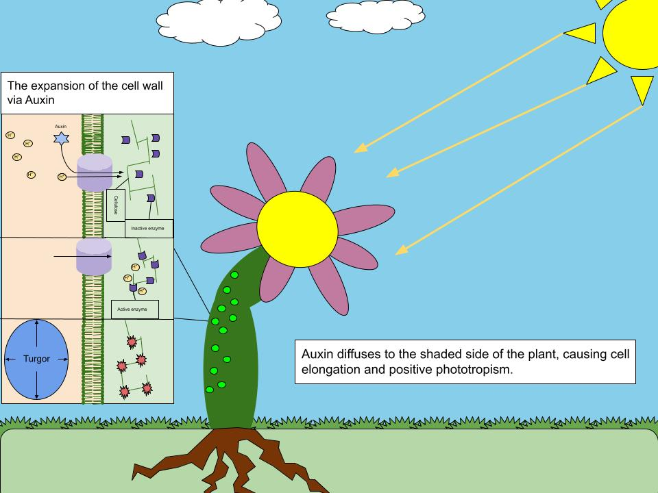
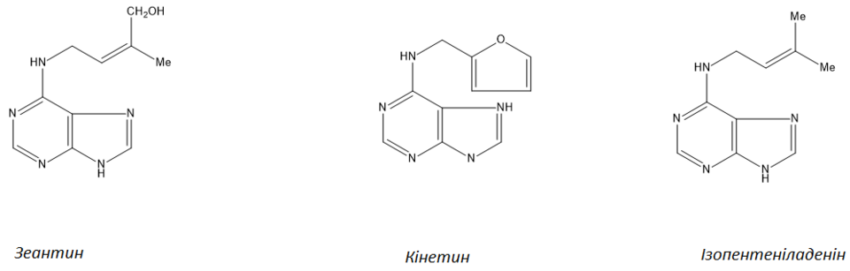
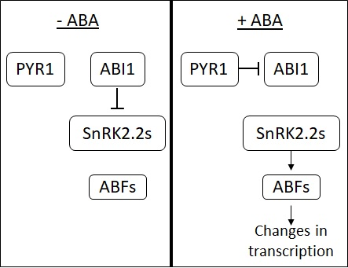
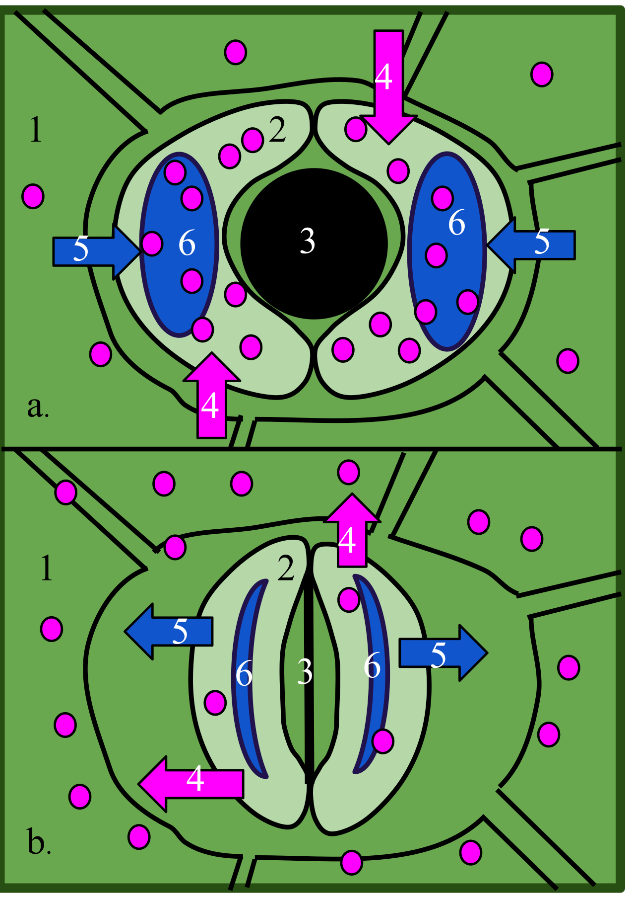
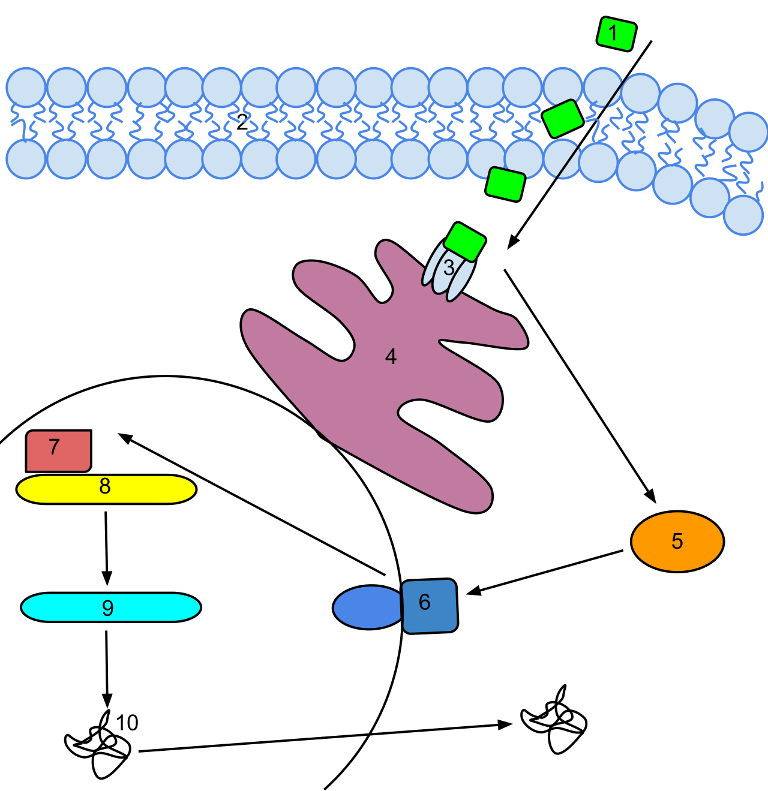
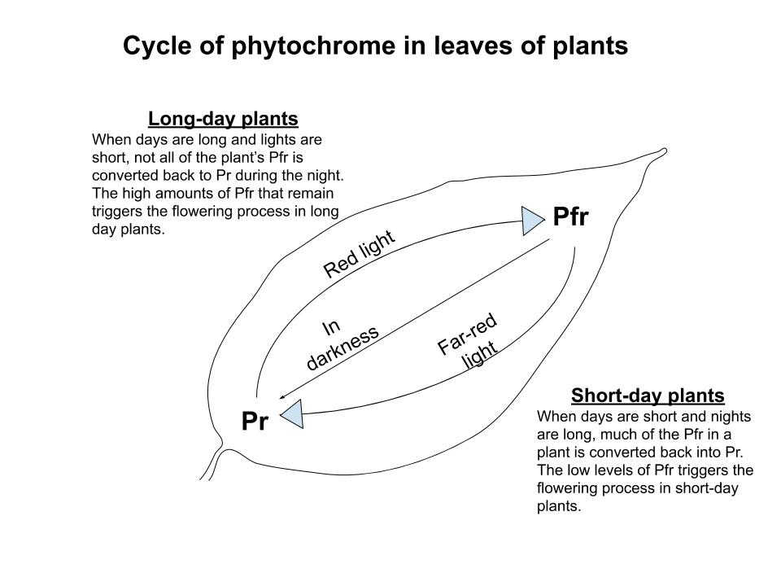
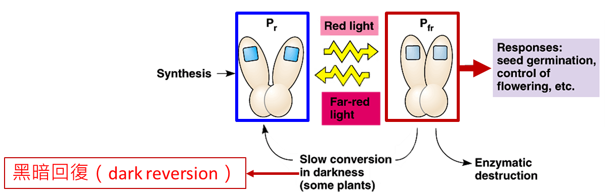

Unit 5: Plant Growth Regulators and Plant Response to Light and Temperature
BOT-DSM-511 Plant Physiology and Metabolism (Theory) BSc 5th Semester, UGC NEP Unit 5 — 10 hours
How to use this page. This unit has two parts: (a) plant growth regulators — auxins, gibberellins, cytokinins, abscisic acid (ABA) and ethylene; and (b) plant response to light and temperature — photoperiodism, phytochrome and vernalization. Read the definition box first, then the explanation, then the diagram or table. Use the Short Notes for revision and the Long Answers for exam practice.
Note on the class notes. Growth regulators were strong in the student's class notes, but cytokinin was only a bare start, and photoperiodism, phytochrome and vernalization were missing from those notes. This page therefore gives cytokinin a full treatment and builds photoperiodism, phytochrome and vernalization from the syllabus, rather than assuming they were already covered.
Auxins
Definition. Auxins are plant growth regulators that promote cell elongation, produced mainly in shoot apices, young leaves and developing seeds. The principal natural auxin is indole-3-acetic acid (IAA).
Discovery: phototropism experiments
Phototropism is bending towards light. Charles Darwin and Francis Darwin showed that the tip of a coleoptile senses light: if the tip was covered, the coleoptile did not bend, even though the bending region below the tip was exposed. The signal therefore travelled from the tip downwards.
Boysen-Jensen then showed that the signal could pass through a block of gelatin but not through an impermeable mica sheet, proving that a chemical substance, not an electrical signal alone, moved from the tip. Paal showed that a cut-off tip placed off-centre on a coleoptile in darkness caused bending away from the side with the tip, because growth was promoted more on that side. F. W. Went isolated the substance: he placed coleoptile tips on agar blocks, then placed the agar asymmetrically on decapitated coleoptiles in darkness and obtained curvature proportional to the amount of substance. He named it auxin. Later work identified the main natural auxin as indole-3-acetic acid (IAA).
The logic to remember for exams is a chain: tip senses light, a chemical moves down, more auxin accumulates on the shaded side, cells on the shaded side elongate more, and the shoot bends towards light.

Polar transport
Auxin transport is polar: it moves mainly in one direction, from the shoot apex downwards towards the base (basipetal transport), and it requires energy. It is not simple diffusion in all directions. This polar flow explains why removing the shoot apex removes the source of auxin and changes growth below it.
Physiological roles
- Cell elongation: auxin promotes elongation of shoot cells, especially in phototropism and gravitropism.
- Apical dominance: auxin from the terminal bud suppresses the growth of lateral buds. Removing the apex (pruning or pinching) breaks dominance and lateral branches grow. This is why gardeners prune to make a plant bushy.
- Rooting: auxins promote adventitious root formation on stem cuttings, so synthetic auxins are used in rooting powders for propagation.
- Parthenocarpy: auxin application can produce seedless fruits without fertilisation, because fruit development is stimulated even when seeds do not form.
- Weedicide: 2,4-D (2,4-dichlorophenoxyacetic acid) is a synthetic auxin used as a selective herbicide. At high doses it over-stimulates growth in broad-leaved weeds and kills them, while grasses are less affected. This is an applied point examiners often ask about.
- Other roles: auxin helps prevent premature leaf and fruit abscission, promotes vascular differentiation, and is involved in fruit growth after fertilisation.
Exam point. Auxin does not simply "make plants grow". Its effect depends on concentration and on the organ: a concentration that promotes shoot elongation may inhibit root elongation. Always state the organ and the dose context in an answer.
Gibberellins
Definition. Gibberellins are plant growth regulators that promote stem elongation, seed germination and flowering in some plants. The best known is gibberellic acid (GA3).
Discovery: Bakanae disease
In Japan, rice plants affected by "Bakanae" (foolish seedling) disease grew abnormally tall, thin and pale, and then fell over. Kurosawa showed that a substance from the fungus causing the disease produced the same elongation in healthy seedlings. The fungus was later identified as Gibberella fujikuroi (now also placed in Fusarium), and the active substances were named gibberellins. The discovery is therefore a disease observation turned into a hormone discovery: a fungal product mimicked a plant's own growth regulator.
Physiological roles
- Stem elongation: gibberellins promote internode elongation. They can make dwarf plants grow tall, and they reverse dwarfism caused by gibberellin deficiency. This is the classic contrast with auxin: both promote elongation, but gibberellin acts strongly on internodes.
- Seed germination and alpha-amylase: in cereal grains such as barley, gibberellin from the embryo signals the aleurone layer to synthesise alpha-amylase and other hydrolytic enzymes. These enzymes break down stored starch in the endosperm into sugars that the growing embryo can use. Without this step, the stored food stays locked up.
- Malting: the brewing industry uses this deliberately. Barley grains are germinated (malted) so that gibberellin-induced enzymes break down starch; the process is stopped by drying before the seedling uses all the sugar, leaving malt sugars for fermentation.
- Bolting: in rosette plants (for example cabbage and beet in their vegetative phase), gibberellin treatment causes rapid stem elongation, or bolting, and early flowering. This shows that gibberellin links vegetative growth to the reproductive phase in some species.
- Other roles: gibberellins can break seed dormancy in some species, promote fruit growth and parthenocarpy in some fruits, and substitute for a long-day or cold requirement in certain plants.
Exam point. Do not confuse the two classic gibberellin examples. Alpha-amylase is the seed-germination and malting example; bolting is the rosette-plant and stem-elongation example. Name both, with the mechanism for the first.
Cytokinins
Definition. Cytokinins are plant growth regulators that promote cell division (cytokinesis), delay senescence, and promote shoot development. The first discovered cytokinin was kinetin.
Discovery, in outline
Cytokinin work grew out of tissue-culture experiments: plant tissues would grow and divide only when a suitable chemical stimulus was present. Work using coconut milk, which promoted cell division in culture, and work on breakdown products of DNA, led to the identification of kinetin, the first cytokinin. Natural cytokinins such as zeatin were later found in plants, especially in developing seeds and roots. In an exam answer, the outline is enough: coconut-milk and DNA work pointed to a cell-division factor, named kinetin. Do not pad this section with a detailed discovery story that the syllabus does not require.
Physiological roles
- Cell division: cytokinins promote cell division in roots, shoots and tissue culture, working together with auxin. Neither alone gives normal organised growth in culture; the balance between them matters.
- Delay of senescence: cytokinins delay ageing and yellowing of leaves (the Richmond–Lang effect). A leaf treated with cytokinin stays green longer than an untreated leaf, because chlorophyll breakdown and protein loss are slowed.
- Apical dominance antagonism: cytokinins oppose auxin in apical dominance. While auxin from the apex suppresses lateral buds, cytokinin promotes lateral bud growth. Removing the apex lowers auxin and lets cytokinin-driven lateral growth proceed.
- Shoot/root balance: a high cytokinin-to-auxin ratio favours shoot formation, while a high auxin-to-cytokinin ratio favours root formation in tissue culture. An intermediate, balanced ratio favours undifferentiated callus growth. This ratio rule is a favourite short-answer point.
- Other roles: cytokinins promote chloroplast development, nutrient mobilisation towards treated areas, and opening of stomata in some cases.
Why this section is longer than the class notes. Cytokinin was only a bare start in the student's notes, so this page covers its roles in full: cell division, senescence delay, antagonism of apical dominance, and the shoot/root ratio. Learn the ratio rule as one sentence and the senescence point as a second sentence, and the section is secure.

Abscisic Acid (ABA)
Definition. Abscisic acid (ABA) is a plant growth regulator that generally inhibits growth, promotes seed dormancy, closes stomata under water stress, and is therefore called the stress hormone.
History, in outline
ABA was recognised from two lines of work that converged on the same substance: one group was studying a substance that promoted abscission (leaf and fruit fall) and another was studying a dormancy-promoting substance in buds and seeds. The names dormin and abscisin were used for these preparations before they were recognised as the same compound, abscisic acid. The detail of the ABA discovery is uncertain in the student's notes, so this page does not over-claim a single year or a single discoverer's name for it. In an exam, name the two older terms (dormin and abscisin) and the convergence, rather than inventing a precise discovery date.
Physiological roles
- Seed dormancy: ABA maintains dormancy in seeds and buds, preventing germination under unfavourable conditions. Germination follows when ABA levels fall and gibberellin action rises, so dormancy is a balance between ABA and gibberellin, not ABA alone.
- Stomatal closure: under water stress, ABA made in roots and leaves signals guard cells to close stomata. Closure reduces water loss by transpiration. This is ABA's most important short-answer role.
- Stress hormone: ABA levels rise under drought, salinity and cold stress. It is called the stress hormone because it helps the plant survive stress by closing stomata, inducing stress-protective proteins, and slowing growth until conditions improve.
- Abscission: ABA promotes senescence and abscission of leaves and fruits, working with ethylene in the abscission zone.
- Growth inhibition: in general, ABA antagonises auxin, gibberellin and cytokinin: it inhibits cell division and elongation and opposes germination-promoting signals.
Exam point. ABA is the inhibitor among the five regulators. If a question asks for an inhibitor, a dormancy promoter, or a stomatal-closure signal, the answer is ABA. If it asks for a growth promoter, it is not ABA.


Ethylene
Definition. Ethylene (C2H4) is a gaseous plant hormone that promotes fruit ripening, senescence and abscission. It is the only major plant hormone that is a gas at ordinary temperatures, so it can act on neighbouring fruits as well as on the fruit that produced it.
Neljubow triple response
Ethylene action was first recognised in seedlings grown in the dark in the presence of illuminating gas: Neljubow showed that ethylene in the gas caused the "triple response" in pea seedlings — (1) reduced stem elongation, (2) increased swelling (thickening) of the stem, and (3) horizontal growth (loss of normal upward geotropic response). The triple response is a standard identification test for ethylene: a seedling that is short, thick and bent is showing ethylene action.
Biosynthesis: methionine to ethylene
Ethylene is made from the amino acid methionine in two main steps: methionine is converted to 1-aminocyclopropane-1-carboxylic acid (ACC), and ACC is then converted to ethylene. The enzymes are ACC synthase (methionine pathway to ACC) and ACC oxidase (ACC to ethylene). Ripening fruits increase ACC synthase activity, so ACC and ethylene rise together.
Amino acid starting material.
1-aminocyclopropane-1-carboxylic acid, made by ACC synthase.
Made from ACC by ACC oxidase. Gaseous hormone, diffuses to neighbouring tissue and fruit.
Physiological roles
- Fruit ripening and climacteric fruits: ethylene triggers ripening. Climacteric fruits (for example banana, mango, tomato and apple) show a sharp rise in respiration and ethylene production at ripening, and they continue to ripen after harvest. Non-climacteric fruits (for example grape, citrus and strawberry) do not show this sharp rise and do not ripen much after harvest. This distinction is a regular exam question.
- Senescence: ethylene promotes senescence of leaves and flowers, which is why cut flowers age faster near ripening fruit.
- Abscission: ethylene promotes abscission of leaves, flowers and fruits by activating the abscission zone.
- Other roles: ethylene promotes adventitious root formation, breaks dormancy in some seeds and buds, and is involved in responses to flooding and mechanical stress.
Ethephon. Ethephon (2-chloroethylphosphonic acid) is a liquid compound that breaks down to release ethylene inside plant tissue. It is used in agriculture to promote uniform fruit ripening, to loosen fruits for harvesting, and to promote flowering in pineapple. In an answer, state it as "an ethylene-releasing compound", not as ethylene itself.
Everyday link. One ripe banana in a bag ripens the others because ethylene gas diffuses from fruit to fruit. That single sentence explains why ethylene is different from the other four regulators: it is a gas.

Comparison Table: The Five Growth Regulators
Use this table to revise the whole of part (a) on one page. The "main contrast" column is the fastest way to tell them apart in a multiple-choice question.
| Regulator | Main natural form / nature | Key roles | Main contrast |
|---|---|---|---|
| Auxin | IAA; polar transport from apex | Cell elongation, apical dominance, rooting of cuttings, parthenocarpy; 2,4-D as weedicide | Apical dominance promoter; synthetic form kills weeds |
| Gibberellin | Gibberellic acid (GA3) | Internode elongation, seed germination via alpha-amylase, malting, bolting | Internode elongation and enzyme induction in seeds |
| Cytokinin | Kinetin first; zeatin natural | Cell division, delay of senescence, opposes apical dominance, shoot/root balance | Opposes auxin in apical dominance; ratio with auxin decides organ |
| ABA | Abscisic acid; inhibitor | Seed dormancy, stomatal closure, stress response, abscission | The inhibitor; the stress hormone |
| Ethylene | C2H4; gas | Fruit ripening (climacteric), senescence, abscission; Ethephon releases it | The only gaseous hormone; ripens neighbouring fruit |
Photoperiodism
Definition. Photoperiodism is the response of a plant to the relative lengths of day and night, especially the control of flowering by day length. In practice, as shown below, it is the length of the uninterrupted night that is critical.
Short-day, long-day and day-neutral plants
Short-day plants (SDP) flower when the day is shorter than a critical day length — that is, when the night is longer than a critical night length. Examples include Chrysanthemum, Xanthium (cocklebur), rice and soybean. Long-day plants (LDP) flower when the day is longer than a critical day length, or the night is shorter than a critical night length. Examples include spinach, radish, henbane and wheat and barley in many varieties. Day-neutral plants flower regardless of day length, once they are mature enough; examples include tomato, cucumber and sunflower.
Critical day/night length. Each species has its own critical value. A short-day plant does not flower on "any short day"; it flowers only when the night exceeds its critical night length. A long-day plant flowers only when the night is shorter than its critical night length. This is why the terms "short-day" and "long-day" can mislead: the plant is really measuring night length.
Short-day plants really need a long uninterrupted night
The classic proof is the night-break experiment. A short-day plant kept in a long night will flower. If that long night is interrupted by even a brief flash of light in the middle, flowering is prevented, because the plant reads the interruption as two short nights, not one long night. Conversely, a brief dark interruption in a long day does not have the same effect. This experiment proves that the uninterrupted dark period, not the total hours of daylight, is the controlling factor for short-day plants.
Night longer than the critical night length; phytochrome stays mainly in the Pr form.
Leaves perceive photoperiod; the signal (florigen concept) moves to the shoot apex.
Shoot apex switches from vegetative to reproductive growth.
Pr is converted to Pfr; the long night is broken, and flowering is prevented in SDP.
For a long-day plant the logic is reversed: a short night (long day) permits flowering, and a long uninterrupted night inhibits it. Day-neutral plants proceed regardless, once mature.
Link to phytochrome
Photoperiod is perceived through phytochrome (see the next section). Red light converts Pr to Pfr, and far-red light converts Pfr back to Pr. A night break with red light raises Pfr and tells a short-day plant that the night has ended. That is why the phytochrome system and photoperiodism are taught together: phytochrome is the photoreceptor that measures the night.

Phytochrome
Definition. Phytochrome is a blue-green photoreceptor pigment that exists in two interconvertible forms, Pr and Pfr, and controls photomorphogenesis — light-dependent development such as seed germination, de-etiolation and flowering.
Discovery
Phytochrome was discovered through work on light-sensitive seed germination, especially lettuce seeds: red light promoted germination, and far-red light reversed the red-light effect. The effect could be reversed repeatedly by alternating red and far-red light, showing that a single pigment existed in two forms switched by light colour. That pigment was named phytochrome.
Structure, in outline
Phytochrome is a protein (an apoprotein) carrying a light-absorbing chromophore (a bilin pigment). The chromophore absorbs light and changes shape, which changes the protein's activity. There are two forms: Pr, the red-absorbing form, and Pfr, the far-red-absorbing form. Pr is the inactive or less active form in most responses; Pfr is the physiologically active form. Only this outline is needed: chromophore plus protein, two forms, Pfr active.
Pr and Pfr interconversion
Pr absorbs red light (around 660 nm) and is converted to Pfr. Pfr absorbs far-red light (around 730 nm) and is converted back to Pr. Pfr also slowly reverts to Pr in darkness (dark reversion). During the day, sunlight contains both red and far-red light, so a mixture of forms is present, with Pfr maintained. During a long night, Pfr gradually falls as it reverts to Pr, which is how the plant measures night length.
Red-absorbing form. Present after a long night.
Far-red-absorbing, physiologically active form.
Cycle repeats. Last light treatment decides the form.

Photomorphogenesis responses
- Seed germination: in light-sensitive seeds such as lettuce, red light (Pfr formation) promotes germination and far-red light inhibits it. The last treatment wins.
- De-etiolation: seedlings grown in darkness are etiolated — pale, with a long hypocotyl and folded leaves. Light, through Pfr, causes de-etiolation: the hypocotyl shortens, leaves expand and unfold, and chlorophyll is produced so the seedling turns green.
- Flowering: phytochrome controls photoperiodic flowering by measuring night length, as described above. In short-day plants, Pfr remaining at the end of the day inhibits flowering if the night is too short; a long night lets Pfr fall and flowering proceed.
- Other responses: phytochrome also affects stem elongation (shade avoidance: a low red to far-red ratio under a canopy promotes elongation), leaf expansion and anthocyanin production.
Vernalization
Definition. Vernalization is the promotion of flowering by a period of low temperature (cold treatment) given to seeds or young plants, so that a plant that requires cold will flower in the following favourable season.
Low-temperature requirement
Many biennial and winter-annual plants must experience winter cold before they can flower. Without cold, they stay vegetative even under otherwise favourable day length and temperature. The cold requirement is quantitative in outline: a certain duration of low temperature is needed, and the effect is remembered by the plant (it persists after the cold ends). The effective temperature is low but above freezing in most cases, and the sensitive stage is often the germinating seed or the young shoot apex.
Examples
Classic examples are winter wheat and winter rye, which are sown in autumn, overwinter in the cold, and flower the following spring; spring varieties of the same cereals do not need this cold period. Other examples include biennial plants such as cabbage, beet and henbane, which form a rosette in the first year, need winter cold, and then bolt and flower in the second year. In horticulture, cold treatment is used to make bulbs and biennials flower on schedule.
Devernalization
Devernalization is the loss of the vernalization effect when a vernalized plant is exposed to high temperature soon after cold treatment. If heat follows cold too quickly, the plant may behave as if it had never been vernalized and may need cold again. The point for exams is simple: cold promotes flowering, and immediate high temperature can undo that promotion.
Relation to flowering and difference from photoperiodism
Both vernalization and photoperiodism control the timing of flowering, but they are different signals. Vernalization is a temperature signal: the plant must experience cold. Photoperiodism is a light signal: the plant must experience a suitable day/night length, measured through phytochrome. A plant may need one, the other, or both. Winter wheat, for example, needs cold first and then a suitable photoperiod; giving it the right day length without cold will not make it flower. In an answer, always state which signal you are describing, and do not present vernalization as a type of photoperiodism.
Comparison Table: Short-Day, Long-Day and Day-Neutral Plants
| Feature | Short-day plants (SDP) | Long-day plants (LDP) | Day-neutral plants |
|---|---|---|---|
| Flowering condition | Day shorter than critical day length; night longer than critical night length | Day longer than critical day length; night shorter than critical night length | Flower regardless of day length, once mature |
| What is really measured | Long uninterrupted night | Short night | Neither; maturity and other factors |
| Effect of a night break (light flash) | Prevents flowering | Promotes flowering (mimics a short night) | No effect on photoperiodic flowering |
| Examples | Chrysanthemum, Xanthium, rice, soybean | Spinach, radish, henbane, many wheat and barley varieties | Tomato, cucumber, sunflower |
| Common name trap | "Short-day" does not mean "needs short days only" — it needs a long night | "Long-day" does not mean "needs long days only" — it needs a short night | Not "no flowering control" — flowering is controlled by other factors |
Exam Traps
- Short-day plants and critical night length, not just day length. Do not write only "short-day plants flower in short days". Write that they flower when the night exceeds a critical length, and that a brief light flash breaking a long night prevents flowering. The night-break experiment is the proof.
- Pr absorbs red and becomes Pfr; Pfr absorbs far-red and reverts. The direction is fixed: Pr + red light → Pfr, and Pfr + far-red light → Pr. Reversing this is the most common phytochrome error. Remember it as "red makes Pfr".
- ABA discovery detail is uncertain in the notes — do not over-claim a year or a name. For ABA, name dormin and abscisin as the earlier terms that converged on abscisic acid, and do not invent a precise discovery year or a single discoverer. Examiners credit the convergence and the roles (dormancy, stomatal closure, stress) more than a guessed date.
- Bonus trap: 2,4-D is a synthetic auxin used as a weedicide, not a fertiliser; Ethephon releases ethylene but is not ethylene itself; and vernalization is a cold signal, not a light signal.
Short Notes
Each note below is written as an exam-ready 5-mark answer. Learn the bold opening sentence, then the supporting points.
Short Note 1 — Roles of auxins
Auxins, principally IAA, promote cell elongation and control growth pattern. Auxin from the shoot apex causes apical dominance by suppressing lateral buds; removal of the apex releases lateral growth. Auxin promotes rooting of stem cuttings and is used in propagation. It can induce parthenocarpy, producing seedless fruits without fertilisation. The synthetic auxin 2,4-D is used as a selective weedicide against broad-leaved weeds. Auxin transport is polar, from apex to base, which explains why the apex controls growth below it.
Short Note 2 — Roles of gibberellins
Gibberellins promote stem elongation and seed germination. They elongate internodes and can reverse dwarfism. In cereal seeds, gibberellin from the embryo stimulates the aleurone layer to produce alpha-amylase, which breaks down endosperm starch into sugars for the embryo. This process is used in malting barley for brewing. Gibberellins also cause bolting — rapid stem elongation — in rosette plants, and can break dormancy in some seeds.
Short Note 3 — Roles of cytokinins
Cytokinins promote cell division and delay senescence. Kinetin was the first cytokinin identified, from work involving coconut milk and DNA breakdown products. Cytokinins delay leaf yellowing and chlorophyll loss. They oppose auxin in apical dominance, promoting lateral bud growth. In tissue culture, the cytokinin-to-auxin ratio decides organ formation: high cytokinin favours shoots, high auxin favours roots, and a balanced ratio favours callus.
Short Note 4 — Pr/Pfr interconversion
Phytochrome exists as Pr and Pfr, interconverted by red and far-red light. Pr absorbs red light (about 660 nm) and becomes Pfr, the physiologically active form. Pfr absorbs far-red light (about 730 nm) and reverts to Pr, and it also slowly reverts to Pr in darkness. The last light treatment therefore decides the form present. This system controls seed germination, de-etiolation and photoperiodic flowering, because the fall of Pfr during a long night measures night length.
Short Note 5 — Vernalization
Vernalization is the promotion of flowering by low-temperature treatment. Winter wheat, winter rye, cabbage and beet need a period of winter cold before they can flower; without it they remain vegetative. The effect persists after cold ends. High temperature soon after cold can cause devernalization, undoing the effect. Vernalization differs from photoperiodism because it is a temperature signal, not a light signal, although a plant may require both cold and a suitable photoperiod before flowering.
Short Note 6 — Roles of ethylene and ABA (combined revision note)
Ethylene is the gaseous ripening hormone; ABA is the stress hormone and inhibitor. Ethylene, made from methionine via ACC, causes the triple response in dark-grown seedlings, promotes ripening in climacteric fruits, and promotes senescence and abscission; Ethephon is an ethylene-releasing compound used in agriculture. ABA maintains seed dormancy, closes stomata under water stress, rises under drought and salinity stress, and promotes abscission. Together they show the contrast in this unit: one gas that accelerates ripening and ageing, and one inhibitor that holds growth back under stress.
Long Answers
Each answer below is written as a ten-mark model answer, with structure, marking points and a diagram cue. In the exam, write the headings in the same order.
Long Answer 1 — Roles of plant growth regulators
Question style: Describe the discovery and physiological roles of plant growth regulators, with examples.
Structure. (1) Introduction: define growth regulators as chemical messengers made in small amounts in one part and acting in another. (2) Auxins: Darwin phototropism experiments, Boysen-Jensen, Paal and Went, IAA, polar transport, apical dominance, rooting, parthenocarpy, 2,4-D. (3) Gibberellins: Kurosawa, Bakanae disease, Gibberella fujikuroi, internode elongation, alpha-amylase and germination, malting, bolting. (4) Cytokinins: kinetin outline, cell division, senescence delay, apical dominance antagonism, shoot/root ratio. (5) ABA: inhibitor, dormancy, stomatal closure, stress hormone, abscission. (6) Ethylene: gas, triple response, methionine → ACC → ethylene, climacteric ripening, senescence, abscission, Ethephon. (7) Conclusion: growth is a balance, especially auxin–cytokinin and ABA–gibberellin balances, not a single hormone acting alone.
Marking points. Name the experiment or source for auxin and gibberellin discovery; state polar transport for auxin; state the alpha-amylase chain for gibberellin; state the cytokinin-to-auxin ratio rule; name ABA as the inhibitor and stress hormone; name ethylene as a gas and give a climacteric example; give one agricultural application (2,4-D, malting or Ethephon).
Diagram cue. Draw the comparison table for the five regulators, plus a small auxin polar-transport arrow diagram (apex → stem, downwards only).
| Regulator | One-line role to quote in the conclusion |
|---|---|
| Auxin | Elongation and apical dominance |
| Gibberellin | Internode elongation and germination enzymes |
| Cytokinin | Cell division and senescence delay |
| ABA | Dormancy and stomatal closure under stress |
| Ethylene | Ripening, senescence and abscission |
Long Answer 2 — Photoperiodism and phytochrome in flowering
Question style: Explain photoperiodism and the role of phytochrome in flowering.
Structure. (1) Definition of photoperiodism and the three plant types: short-day, long-day and day-neutral, with examples. (2) Critical day/night length: explain that short-day plants need a night longer than a critical length and long-day plants need a night shorter than a critical length. (3) Night-break experiment: a light flash breaking a long night prevents flowering in short-day plants, proving night length is measured. (4) Phytochrome: discovery from red/far-red germination work, chromophore plus protein structure in outline, Pr and Pfr forms. (5) Interconversion: Pr + red → Pfr, Pfr + far-red → Pr, dark reversion during the night, and how falling Pfr measures night length. (6) Photomorphogenesis link: seed germination, de-etiolation and flowering as Pfr-controlled responses. (7) Conclusion: photoperiodism is the response, phytochrome is the receptor that measures it; a night break works because it restores Pfr.
Marking points. Correct examples for SDP, LDP and day-neutral plants; the night-break experiment and its conclusion; the correct Pr/Pfr directions with wavelengths; dark reversion; the statement that Pfr is the active form; the distinction between the flowering response and the photoreceptor.
Diagram cue. Draw the Pr/Pfr cycle (Pr → red → Pfr → far-red → Pr) and the photoperiodic flowering flowchart (long uninterrupted night → flowering signal from leaf → apex flowers; night break → no flowering in SDP).
Study Checklist
Tick each item when you can explain it without looking. Your progress is saved on this device.
Next: revise Unit 5 with the MCQs page, then practise the Dec 2025 PYQ pattern for this unit. Images on this page are local files only; no external images are hotlinked.